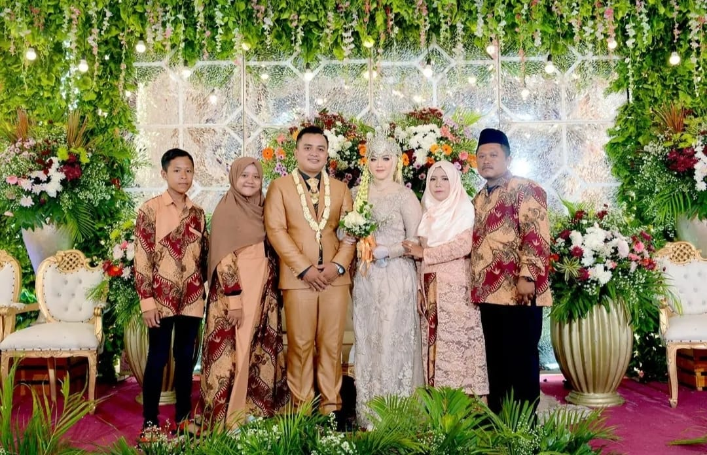

Saya adalah seorang guru informatika yang berdedikasi, pengusaha kue yang kreatif, dan aktif dalam kegiatan ke-NU-an sebagai bentuk pengabdian kepada masyarakat. Bagi saya, pendidikan, usaha, dan pengabdian adalah cara untuk membawa manfaat bagi sesama..

About me
"Nama saya Suliswanto, seorang suami dari Anis Musyayaroh dan ayah dari M. Fikri Asyam Jauhary. Saya dilahirkan dari keluarga sederhana, di mana perjuangan adalah bagian tak terpisahkan dari hidup kami. Bersama istri tercinta, kami menekuni pekerjaan membuat kue, mengolah setiap bahan dengan cinta, harapan, dan doa untuk masa depan yang lebih baik. Hidup kami penuh pelajaran; terkadang manis seperti kue yang kami buat, terkadang pahit seperti perjuangan yang kami jalani. Namun, saya percaya, setiap kesulitan adalah cara Tuhan membentuk kami menjadi lebih kuat."
Motivasi
"Air mata adalah bahasa paling jujur dari hati yang sedang berjuang. Jangan pernah merasa lemah karena kesedihan; justru di balik setiap duka, ada kekuatan besar yang menanti untuk ditemukan. Hidup adalah perjuangan tanpa akhir, dan setiap langkah maju, sekecil apa pun, adalah bukti keberanian kita untuk terus bertahan."